Thank you for purchasing this item. If you have any questions that are beyond the scope of this help file, please feel free to contact us via the support tab at Themeforest. Thanks so much!
Created |
Jan, 10 2019 |
Last Update |
– |
Current Version |
1.0 |
Login to your themeforest account page, and navigate to "Download" tab to download the item you have purchased from ThemeForest. Click the download link "All files & documentation", after that be sure to extract the zip file and inside it browse to "Installable-Theme-Inside/aiteko.zip". The "aiteko.zip" file is the one you want to upload to WordPress.
If you have previously download the theme by clicking the “Installable WordPress file only” link, you're ready to go!
Login to your WordPress administrator page. You can upload the theme zip file in "Appearance > Themes" and click the "Add New" button on the top of page. After that click "Upload Theme" button at the top of page, upload the zip file, once it has done, click Activate the theme.
You also can manually upload the theme files via FTP into "/wp-content/themes/" path at your hosting, log-in into your wp-admin and activate the theme.
If you found any strange situation when installing the theme, please let us know ASAP.
Once you have installed and activated the theme, you will be prompted to install recommended plugins. Just click the link to begin installing plugins. We have packed all core options and features into 1 plugin "WIP-Themes Core". You MUST activate this plugin to enabled all options and features. You also need to install and activate the "Elementor" plugin to get the same features as the demo.
Again, if you found any strange situation when installing the theme, please let us know ASAP.
Note:
Before importing the demo data, make sure you have installing and activate all required plugins WIP-Themes Core, Elementor and One Click Demo Import.
Once you have install and activate All Required plugins. Go to "Appearance > Import Demo Data" menu as shown on image below.
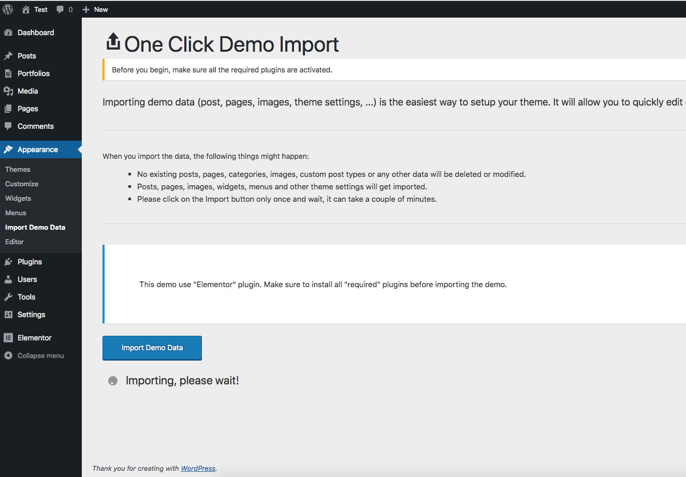Click the "Import Demo Data" button. You will see a text below the button says "Importing, please wait!". Please wait, and don't navigate away from this page until the import process is finish, as shown on image below.
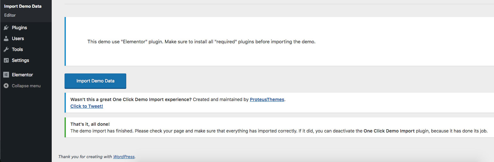Please be patient when importing the demo. Don't navigate away from the current page until the importer has done importing the content and settings, or you might break the import process.
If you see a 502 bad gateway error when importing the sample data please contact your hosting company since this is a server side error.
After importing the demo data, you need to setup some Elementor's global settings so it will not override your site's font and colors.
Please navigate to "Elementor > Settings", and disabled the default color and font from Elementor.
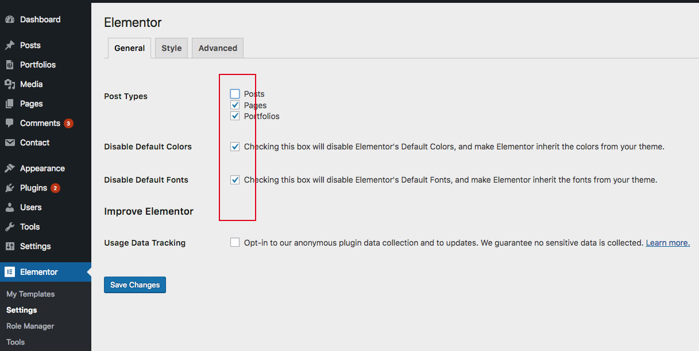If you're new with Elementor, please follow the official documentation here https://docs.elementor.com/
By default the homepage will look like a blog (this is how WordPress is intended to work). If you want a custom homepage you can create it using the Elementor then go to Settings > Reading and you can define your homepage there. Make sure you have created and published your homepage page prior. If you don’t have any pages or all your pages are currently drafts then you won’t be able to see the settings in the screenshot below.
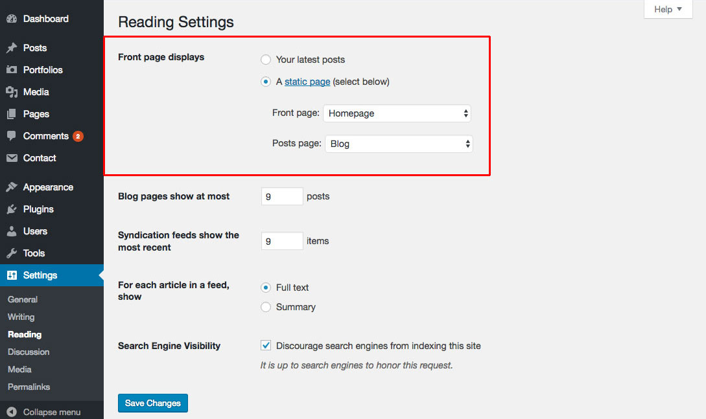This theme has no "Custom" theme settings page. All you need to do is navigate to Appearance > Customize to setup some settings available on this theme.
This theme includes some of easy to use options to customize the design of your site. Most of your theme options can be found in the live WordPress theme customizer. Our theme uses only native WordPress functions, or you should be familiar with the way the Customizer looks and works. Simply navigate to Appearance > Customize to make changes to the design of your website.
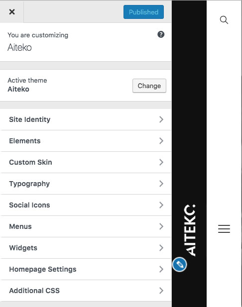In this section, you can setup your website Logo, Site Title & Tagline, Copyright Text and also favicon image.
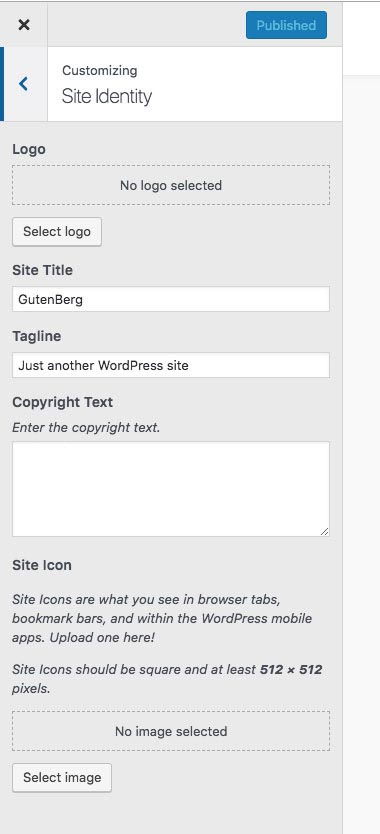This section will allow you to choose the portfolio archive style, and enabled/disabled some site elements.
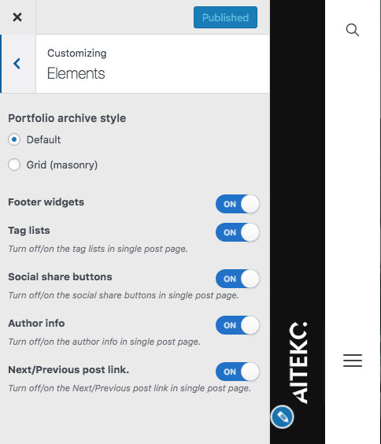The default theme skin is use minimalist black and white concept, but we believe not everyone love this color concept. That's why we provide a custom skin settings, where you can set the custom color for your website. Do not forget to activate the "Enable Custom Skin" option in "Base Styling" section, to activate the custom color skin on the front-end of your website.
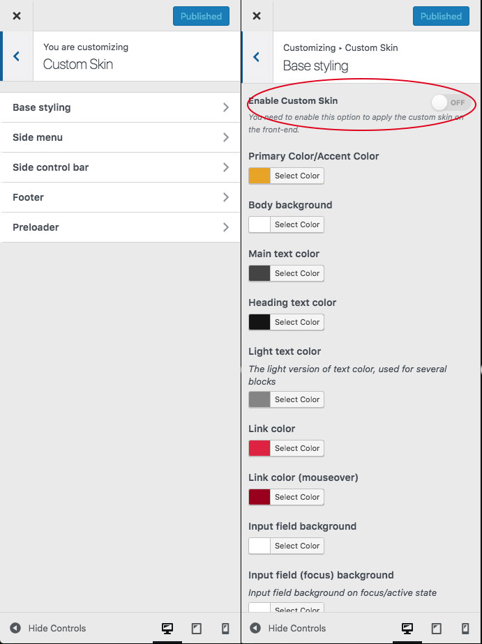Select from 500+ google web fonts for heading and body text. Find the best font for your site easily! Set the base font size and all heading font size. Since almost all font have diifferent characteristic, you might need to adjust the font size everytime you pick a new font for your site.
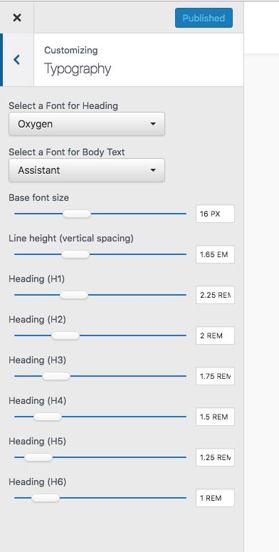Manage the social links and icons on the left bar.
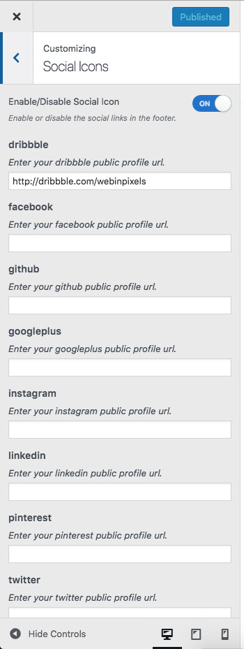If you have huge changes in the theme style, I suggest you to create a child theme.
But instead of changing the theme's css file directly, you can place your css codes here - it is the best way to save your changes since it will not get removed when the theme get updated into new version.
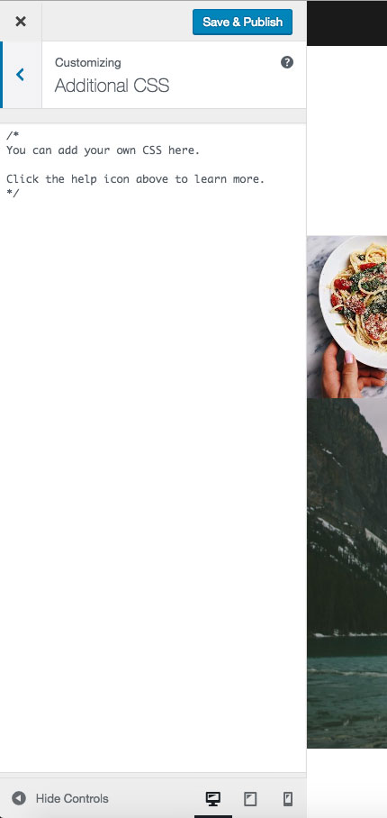Since WordPress 5.0, your editing screen will looks bit different than usual. The page options will be listed in the right hand side. For page, you have an option to show/hide the page title.
Options
For portfolio, you have a simple & optional option to enter your projects year info.
We using some CSS files in this theme.
/** =============================== ********* 1. BASE STYLING ********* =============================== **/ **somecode /** ============================== ********* 2. Wrap & Menu ********* ================================== **/ **somecode /** ================================= ********* 3. Main Container ********* ===================================== **/ **somecode /** ============================= ********* 4. Blog Posts ********* ================================= **/ **somecode /** ================================ ********* 4.1 Single Posts ********* ==================================== **/ **somecode /** ============================= ********* 5. Inner page ********* ================================= **/ **somecode /** ============================ ********* 6. Portfolio ********* ================================ **/ **somecode /** ================================= ********* 7. Search results ********* ===================================== **/ **somecode /** ============================= ********* 8. Pagination ********* ================================= **/ **somecode /** ================================= ********* 9. Overlay Search ********* ===================================== **/ **somecode /** =========================== ********* 10. WIDGETS ********* =============================== **/ **somecode /** ============================ ********* 11. COMMENTS ********* ================================ **/ **somecode /** ========================== ********* 12. FOOTER ********* ============================== **/ **somecode /** ========================= ********* 13. MISC ********* ============================ **/ **somecode
If you would like to edit a specific section of the site, simply find the appropriate label in the CSS file, and then scroll down until you find the appropriate style that needs to be edited.
If you are a developer, all .scss file also included under "scss" folder for more speedy and easy to modify the default style :)
This theme imports some Javascript files.
| Tag | Description |
|---|---|
html5.js |
Helper for Internet Explorer version < 9. |
global.js |
All base fuction defined here. |
jarallax.min.js |
Parallax module/helper |
anime.min.js |
CSS3 animation helper |
smooth-scrollbar.js |
Scrollbar module |
magnific-popup.min.js |
Image lightbox |
All images used on demo are from unsplash.com and pexels.com.
Once again, thank you so much for purchasing this item. As we said at the beginning, we'd be glad to help you if you have any questions relating to this item. We'll do our best to assist.
Best Regards,
WIP Themes.